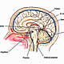
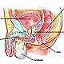

OncoGuía - Tipos de cáncer
-
 Adenoma de HipófisisGlándula situada en la silla turca
Adenoma de HipófisisGlándula situada en la silla turca -
 ColonLa última porción del aparato digestivo
ColonLa última porción del aparato digestivo -
 Cuello Uterino/Cérvixparte más inferior del aparato rep. femenino
Cuello Uterino/Cérvixparte más inferior del aparato rep. femenino -
 Endometrio/úteroórgano hueco, situado en la pelvis.
Endometrio/úteroórgano hueco, situado en la pelvis. -
 Esófagotubo hueco que transporta los alimentos
Esófagotubo hueco que transporta los alimentos -
 Estómagositúado en la parte alta del abdomen
Estómagositúado en la parte alta del abdomen -
 GliomasSe produce en el cerebro o en la médula espinal
GliomasSe produce en el cerebro o en la médula espinal -
 MamaGlándula destinada a la producción de leche
MamaGlándula destinada a la producción de leche -
 Médula Espinalel tejido nervioso más extenso del cuerpo
Médula Espinalel tejido nervioso más extenso del cuerpo -

Meduloblastomatumores malignos en la fosa posterior del cerebro
-
 MelanomaCrecimiento de los melanocitos
MelanomaCrecimiento de los melanocitos -
 MeningiomasTumor cerebral usualmente benigno
MeningiomasTumor cerebral usualmente benigno -
 No MelanomaEl tumor más frecuente del ser humano
No MelanomaEl tumor más frecuente del ser humano -
 PáncreasGlándula que participa en el proceso de la digestión
PáncreasGlándula que participa en el proceso de la digestión -

PróstataGlándula sexual exclusiva de los varones
-
 RectoLa última porción del aparato digestivo
RectoLa última porción del aparato digestivo -
 Vejigaórgano situado en la parte baja de la pelvis
Vejigaórgano situado en la parte baja de la pelvis
Cáncer de piel Melanoma
Introducción
La piel es el órgano más extenso del ser humano. Su función principal es la de protección frente agresiones externas (traumatismos, radiación solar, calor, etc). Consta de dos capas, una más externa llamada epidermis que se encuentra en constante recambio (descamación), y otra capa más interna denominada dermis. Por debajo se encuentra el tejido subcutáneo.
Los melanocitos se encuentran localizados en la parte más profunda de la epidermis. Contienen un pigmento llamado melanina que se extiende por toda la epidermis y da a la piel su color.

El melanoma es un crecimiento descontrolado de los melanocitos. Mientras el melanoma permanece en la epidermis es raro que se extienda a otras partes del cuerpo, pero si no es extirpado quirúrgicamente puede crecer hacia la dermis y las células tumorales pueden diseminarse a otras zonas del cuerpo (metástasis), de ahí la importancia de la detección precoz en este tumor.
Habitualmente, el melanoma aparece en zonas de la piel expuestas al sol, en los varones en la espalda o en el pecho, mientras que en mujeres se suele localizar con más frecuencia en la parte inferior de las piernas. Sin embargo, el melanoma ocasionalmente puede desarrollarse en zonas de la piel no expuestas a radiaciones ultravioleta (UV) o en las mucosas (ojos, boca, órganos internos).
Hay distintos tipos de melanoma:
- Melanoma de extensión superficial: es el más frecuente, suele comenzar como un lunar que crece superficialmente.
- Melanoma nodular: ocurre en un 10% de los casos. Presenta un crecimiento en profundidad.
- Léntigo maligno: suele surgir en personas de edad madura en zonas de la piel expuestas a la irradiación solar.
- Melanoma lentiginoso acral: no suele estar asociado con la aparición de lunares. Puede ocurrir en personas con todo tipo de piel y se observa en las palmas de las manos, las plantas de los pies, la parte interna de los dedos, y en uñas de manos y pies.
Aunque la mayoría de melanomas se asocian a lesiones oscuras, ocasionalmente pueden presentarse sin pigmento, lo que dificulta que sean reconocidos.
Cada año se diagnostican en España aproximadamente 3.600 nuevos casos de melanoma, siendo ligeramente más frecuente en mujeres que en varones.
Prevención
La exposición excesiva a las radiaciones ultravioletas y las quemaduras solares, especialmente en la infancia y adolescencia, son un factor de riesgo para el desarrollo de melanomas. Las lámparas UVA de bronceado son incluso más perjudiciales para la salud que las radiaciones UV procedentes del sol.
El riesgo de desarrollar un melanoma es 20 veces mayor en las personas de raza caucásica porque tienen menos pigmento protector en su piel. La gente de pelo claro (pelirrojos o rubios), de piel blanca, pecosa o que se quema fácilmente con el sol, tienen un mayor riesgo de desarrollar un melanoma.
En la aparición de un melanoma existen, además, otra serie de factores predisponentes:
- Nevus displásicos (lunares):: Generalmente no están presentes en el nacimiento, pero comienzan a aparecer en la infancia y la adolescencia, generalmente hasta los cuarenta años. La mayoría de los nevus son normales (sin displasia) y no se convierten en melanomas. La gente que tiene muchos lunares o son grandes tiene mayor riesgo de desarrollar melanoma.
- Historia familiar: Aproximadamente el 10% de los pacientes diagnosticados de un melanoma tienen un antecedente en algún miembro próximo de su familia.
- Inmunosupresión: Los pacientes que tienen enfermedades que suprimen el sistema inmune, o bien toman medicación inmunosupresora tienen mayor riesgo de desarrollar melanoma.
- Edad: La mitad de todos los melanomas aparecen en personas de alrededor de 50 años, aunque también es el cáncer más comúnmente diagnosticado en gente de menos de 30 años (probablemente por la exposición prolongada a radiación ultravioleta ofrecida por las lámparas de rayos UVA ).
- Xeroderma pigmentoso: Se trata de una rara enfermedad hereditaria con una extrema sensibilidad a la radiación ultravioleta que tiene alto riesgo de desarrollar melanomas y otros tumores de la piel.
La mejor prevención del melanoma es limitar la exposición al sol. Para ello se recomienda:
- Permanecer en la sombra, evitando, en la medida de lo posible, exposiciones prolongadas al sol, especialmente al mediodía.
- Cubrir la piel expuesta al sol (manga larga, pantalones largos y gorras).
- Utilizar cremas de protección solar adecuadas: factor de protección 15 o superior en áreas de la piel expuestas al sol, sobre todo en las horas en las que la luz solar es más fuerte (entre las 10 y las 14 horas). Seguir las instrucciones del fabricante para su correcta aplicación y recordar que no se deben utilizar para prolongar el tiempo de exposición a la radiación ultravioleta.
- Usar gafas de sol homologadas.
- Evitar otras fuentes de luz ultravioleta, especialmente lámparas de rayos UVA.
- Evitar la exposición excesiva al sol de los niños (menores de 3 años de manera especial), y utilizar un factor de protección solar adecuado a sus necesidades. Es importante crear el hábito de la protección solar desde la infancia.
- Identificar lesiones cutáneas sospechosas y acudir al especialista para su diagnóstico y extirpación si fuese necesario.
Diagnóstico precoz
Las personas con más riesgo de desarrollar melanoma deben realizarse exámenes periódicos de la piel de todo el cuerpo combinando la autoexploración con exámenes médicos (por ejemplo mediante dermatoscopia). Hay que buscar cambios en el tamaño, la forma o el color de las manchas de la piel, así como los cambios en su comportamiento, como picor, dolor, sangrado…
La regla del ABCDE permite recordar fácilmente cómo distinguir un lunar de un melanoma:
- A de Asimetría: La mitad del lunar no es simétrica con la otra
- B de Bordes irregulares.
- C de Color variado: El color no es el mismo en todo el lunar
- D de diámetro: la lesión tiene más de 6 mm de diámetro (aunque se han diagnosticado melanomas de menor diámetro)
- E de Evolución o cambio de aspecto del lunar
Es fundamental acudir al especialista en el caso de apreciar cambios en un nevus.
Síntomas y Diagnóstico Clínico
Ante la sospecha de una lesión cutánea que pudiera ser un melanoma, el dermatólogo elaborará una historia clínica en la que se reflejará la evolución de la lesión así como todos los detalles referentes a los síntomas, factores de riesgo y/o antecedentes familiares. Posteriormente, se procederá a realizar un examen físico general y en particular de la lesión sospechosa.
Para obtener confirmación de la naturaleza de la lesión, se realizará una biopsia (se toma una pequeña muestra de tejido de la lesión y se estudia al microscopio).
En el caso de confirmarse la presencia de un melanoma, es preciso realizar una serie de pruebas diagnósticas para determinar si el melanoma se ha extendido a los ganglios linfáticos regionales o a alguna otra parte del cuerpo. Estás pruebas incluirán analíticas sanguíneas y pruebas radiológicas, como el TAC o scanner, la Resonancia Magnética o el PET. Son pruebas poco agresivas que no suelen tener efectos secundarios y exponen a pequeñas cantidades de radiación.
Tratamiento